Uma tela inicial no estilo do Android TV para celulares e tablets ligados no controle. Jogos de Android, ROMs de emulador, filmes, séries e trailers — tudo em fileiras, pronto para o direcional.
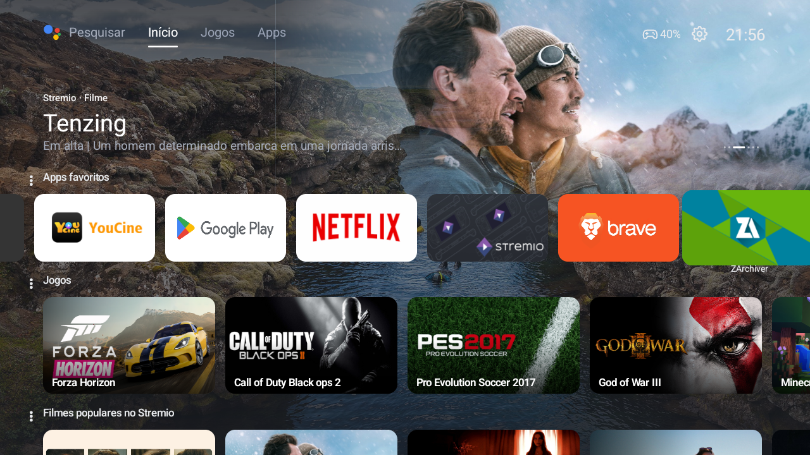
Ele substitui a tela inicial do aparelho (ou abre como um app comum) e organiza tudo em três abas — Início, Jogos e Apps — pensadas para serem usadas de longe, com um controle de videogame.
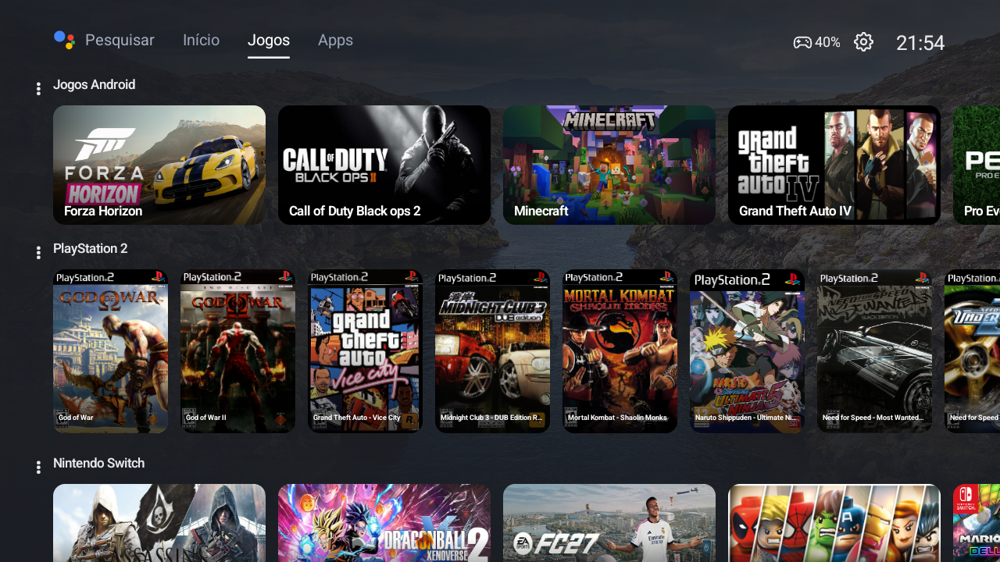
Jogos de Android e ROMs de emulador lado a lado, cada plataforma na sua fileira.
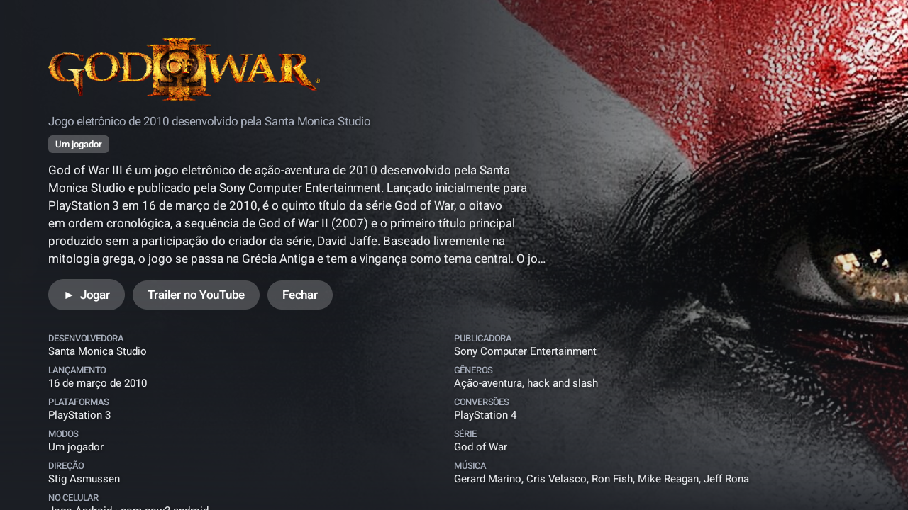
Aperte Quadrado (ou X) num jogo e veja tudo sobre ele, como na loja de um console.
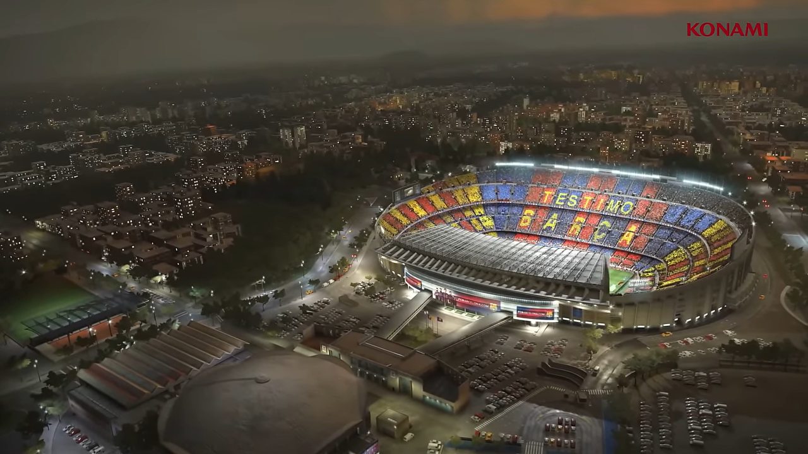
Pare o foco um segundo num jogo, filme ou série e o trailer começa no fundo.
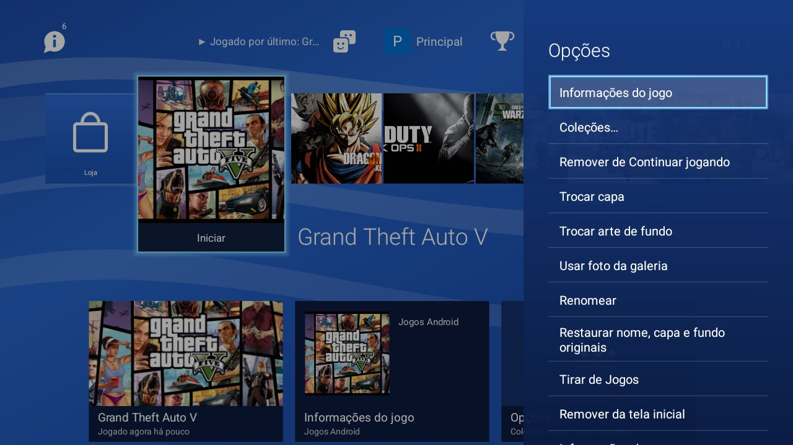
Segure Triângulo (ou Y) num jogo para abrir o menu dele, no visual do tema escolhido.
Fileiras do Stremio (Cinemeta), Apple TV/iTunes, Netflix (pelo TMDB) e YouTube em alta, com título e sinopse em português. Abrem direto no app de cada serviço.
Um filme ou série em destaque no alto do Início, trocando a cada 5, 8 ou 15 segundos.
Cada app ganha um card na cor do próprio ícone, ou o banner de Android TV que ele traz. Favoritos no Início e a gaveta completa na aba Apps.
Busque artes no libretro, GameTDB, Steam, App Store, Internet Archive ou SteamGridDB — ou use uma foto da galeria.
Em Configurações → Capas, escolha de onde baixar as capas de todos os jogos e, se quiser, outra fonte para cada plataforma (ex.: tudo da Steam, Switch do SteamGridDB). Com “Só da fonte escolhida”, nada vem de outro lugar.
Paisagens premiadas do Wikimedia Commons (com crédito), uma foto sua ou cor lisa. O descanso de tela mostra paisagens com relógio.
A barra de luz do DualShock 4 / DualSense acompanha a cor do jogo em foco. Vibração curta ao abrir um jogo. Bateria do controle no topo.
Com a sua conta, o progresso de conquistas aparece na página de cada ROM.
Em vez de digitar com o controle, escaneie um QR code e cole as chaves no celular. Tudo fica na sua rede Wi-Fi.
Cada pessoa da casa com os próprios favoritos, coleções, aparência, histórico e contas. Perfis infantis pedem PIN para abrir as configurações, têm limite de tempo por dia e não veem jogos marcados como “só para adultos”.
Crie fileiras como “Multiplayer” ou “Zerar” com jogos de qualquer plataforma: ROMs, Android, atalhos e nuvem.
Tempo jogado hoje, na semana e no total, gráfico dos dias e os jogos e plataformas que você mais jogou.
Catálogos do GeForce NOW e do Xbox Cloud Gaming, sem chave. Com a sua conta Steam, mostra quais jogos seus rodam no GeForce NOW.
Gamertag, gamerscore e progresso das conquistas pelo OpenXBL; biblioteca da Steam pela API oficial, com a sua chave.
Para apps que não aceitam controle: um cursor movido pelo direcional, toque com X, e botões que você mapeia para tocar em pontos da tela.
Exporte e importe configurações, capas e nomes trocados, histórico e perfis num arquivo. Com root, backup dos saves dos emuladores.
Limite de carga, modo desempenho ao abrir jogos e atualização dos emuladores pelas releases oficiais. Resolução e densidade da tela funcionam também sem root, com uma permissão dada uma vez pelo PC.
Pausa o que está tocando, liga a economia de energia e apaga a tela; ligado na TV pelo cabo, a maioria das TVs entra em espera.
Sons ao mover, abrir e voltar, em vários estilos, gerados pelo próprio app (nenhum som de console).
Embaixo do relógio: o clima da sua região e a temperatura do celular.
Tamanho dos cards, arredondamento, colunas, cor de fundo e de destaque (ou automática pelo tema do Android), ordem e visibilidade de cada fileira.
Em Configurações → Temas e sons → Tela inicial, o app inteiro muda de cara: tela inicial, biblioteca, “todos os apps”, busca, configurações, opções do jogo, informações, janelas e o menu rápido passam a seguir o jeito de cada console. Tudo é desenhado pelo app, imitando só a organização de cada um, sem logos, ícones, sons ou fontes das fabricantes.
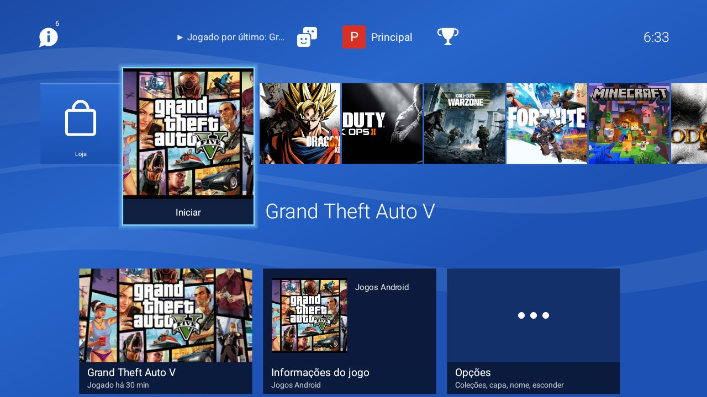
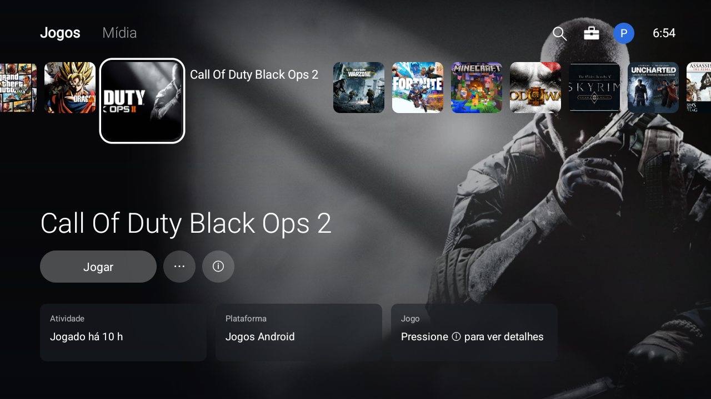
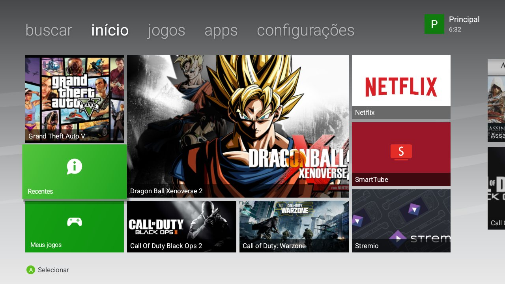
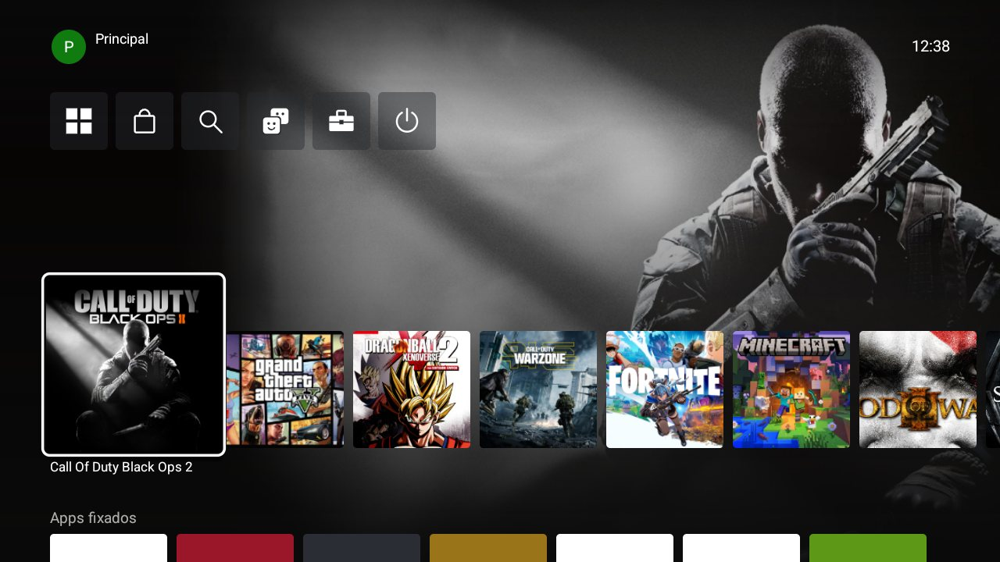
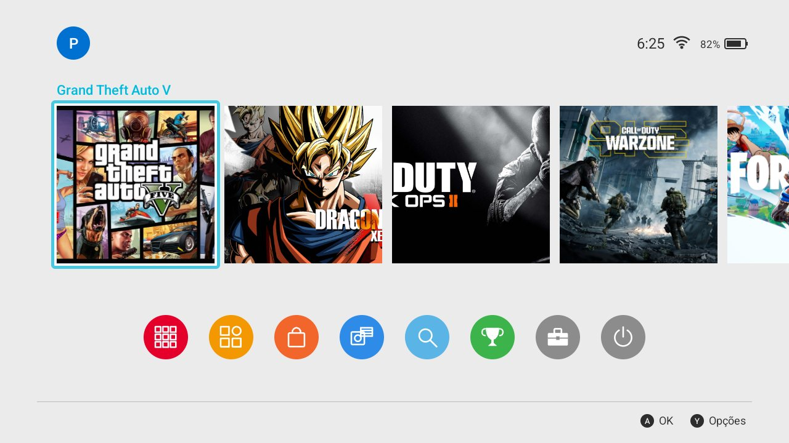
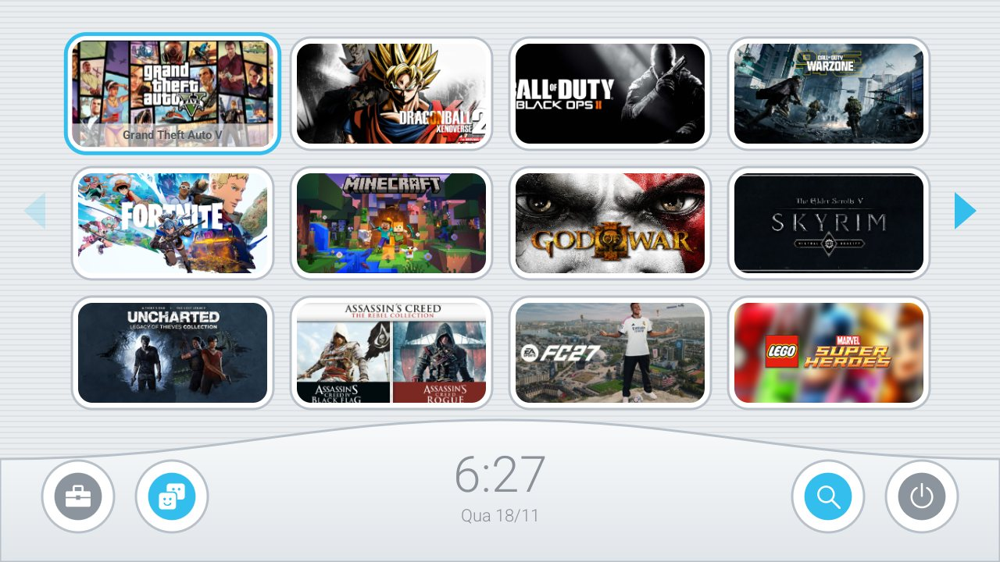
Quadradas no PS4, PS5, Switch e Xbox Series; banners deitados no Android TV, Xbox 360 e Wii. Ao trocar de tema, as capas que faltam são buscadas sozinhas, e em “Trocar capa” dá para escolher a quadrada à mão.
Cada tema mostra as dicas de botão e a seleção no jeito do console. Em “Tema pronto”, cores e sons mudam junto.
Capturas feitas num Galaxy S22+ ligado no controle. Toque numa imagem para ampliar; deslize para o lado para ver mais.
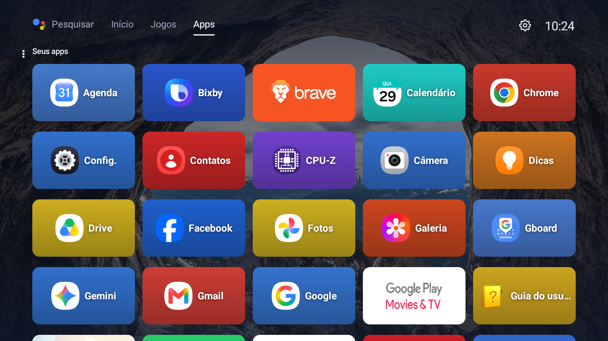
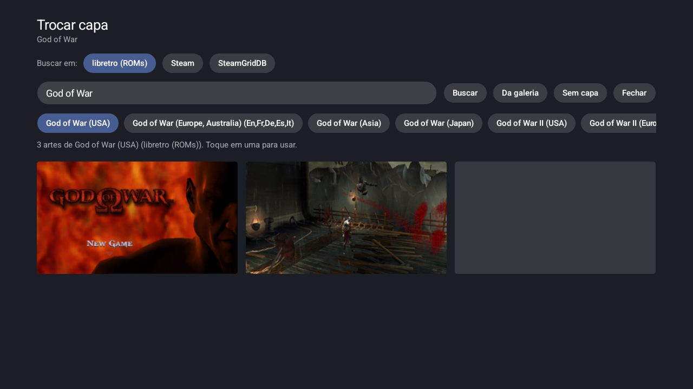
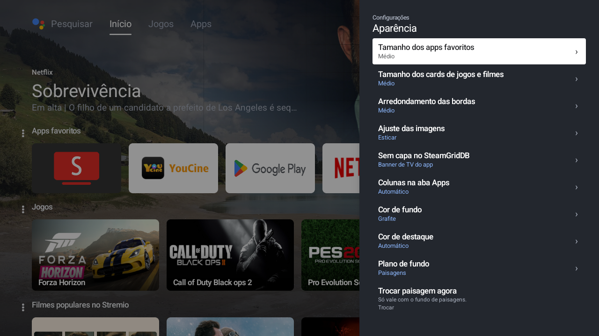
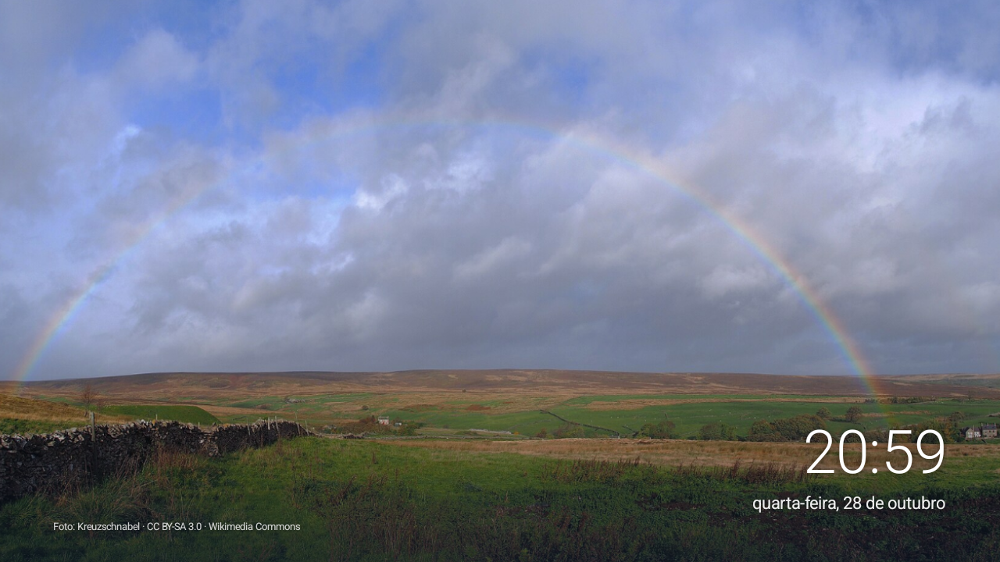
O GameLauncherTV não emula nada: ele encontra suas ROMs e abre cada uma no emulador que você já tem instalado. Em Configurações → Emuladores dá para escolher outro, inclusive qualquer app instalado.
| Plataforma | Extensões | Emuladores reconhecidos |
|---|---|---|
| PlayStation | cue, m3u, pbp, chd, iso | DuckStation, RetroArch |
| PlayStation 2 | iso, chd, cso, zso, gz, bin | NetherSX2 / AetherSX2, PCSX2 |
| PlayStation 3 | iso, pkg, chd | aPS3e, RPCS3 |
| PlayStation 4 | pkg | shadPS4, Kyty |
| PSP | iso, cso, pbp, chd | PPSSPP / PPSSPP Gold |
| PS Vita | vpk, zip | Vita3K |
| Nintendo Switch | nsp, xci, nsz, xcz | Eden, Yuzu, Sudachi, Citron, Suyu, Torzu, EggNS |
| Wii U | wua, wud, wux, rpx | Cemu |
| GameCube / Wii | iso, rvz, wbfs, gcm, wia, ciso | Dolphin, Dolphin MMJR |
| Nintendo 3DS | 3ds, cia, cci, cxi | Azahar, Lime3DS, Citra |
| Nintendo DS | nds, zip, 7z | melonDS, DraStic, RetroArch |
| Nintendo 64 | n64, z64, v64, zip, 7z | RetroArch |
| Game Boy / Color / Advance | gb, gbc, gba, zip, 7z | RetroArch |
| Super Nintendo · NES | sfc, smc, nes, zip, 7z | RetroArch |
| Mega Drive | md, gen, smd, bin, zip, 7z | RetroArch |
| Dreamcast | cdi, gdi, chd | Flycast, Redream, Reicast |
| Xbox 360 | iso, xex, god, zar | aX360e, Xenia |
As pastas são lidas pelo seletor de arquivos do Android, sem pedir permissão ampla de armazenamento.
Só fontes oficiais e públicas, sem scraping. O app funciona completo sem nenhuma chave; as chaves (todas grátis) apenas completam o que falta. Coloque-as em Configurações → Contas e chaves.
| Fonte | Para quê | Precisa de chave? |
|---|---|---|
| Steam | Capa, arte larga, logo, sinopse, ficha, prints e trailer de jogos | Não |
| Wikipédia / Wikidata | Resumo e ficha de jogos; títulos e sinopses em português | Não |
| libretro-thumbnails | Tela-título, caixa e prints das ROMs (o banco do RetroArch) | Não |
| GameTDB | Capas de Wii, GameCube, Wii U, 3DS, DS, Switch e PS3 | Não |
| Internet Archive · App Store | Capas escaneadas e artes de jogos mobile | Não |
| Stremio (Cinemeta) | Filmes e séries populares, lançamentos e por gênero | Não |
| Apple (iTunes) | Filmes em alta na loja do país, com trailer | Não |
| Wikimedia Commons | Paisagens de fundo e do descanso de tela (CC BY-SA, com crédito) | Não |
| TMDB | Filmes e séries em português, fileiras da Netflix, trailers dublados | Sim — grátis em themoviedb.org |
| SteamGridDB | Capas, logos e artes que as fontes livres não têm | Sim — grátis em steamgriddb.com |
| YouTube Data API | Trailers de jogos fora da Steam e “Em alta no YouTube” | Sim — grátis no Google Cloud Console |
| RetroAchievements | Progresso das suas conquistas nas ROMs | Sim — sua conta e chave de API da Web |
Nenhuma chave vem dentro do APK público. As suas ficam só no aparelho. O app não tem conta, anúncios nem coleta de dados, e só pede Internet e o estado da rede (para o “só no Wi-Fi”).
“Colocar pelo celular” abre uma página só na sua rede, com um endereço secreto novo a cada vez, que fecha sozinha depois de salvar.
Capas, informações e trailers ficam guardados (de 24 h a 30 dias, conforme a fonte), e as imagens têm um cache em disco de ~50 MB.
Funciona com qualquer controle Bluetooth ou USB. Toque na tela também funciona.
GameLauncherTV-X.Y-publico.apk.Projeto Android em Kotlin (compileSdk 36, minSdk 33, Java 17). Há duas variantes: publico, sem chaves, para distribuir; e pessoal, que embute as chaves de um arquivo segredos.properties fora do Git.
./gradlew assemblePublicoRelease # APK em app/build/outputs/apk/publico/release/
Para a variante pessoal, crie segredos.properties na raiz (ele já está no .gitignore):
TMDB_KEY=... STEAMGRIDDB_KEY=... YOUTUBE_KEY=...
Da 1.0 (85 KB) à 3.4 (~770 KB), 26 versões.
Nova seção Configurações → Capas: escolha de onde baixar as capas de todos os jogos (Steam, SteamGridDB, loja do console, libretro) e, se quiser, uma fonte diferente para cada plataforma. Com “Só da fonte escolhida”, as capas vêm apenas dela.
O app passa a se chamar GameLauncherTV. Sete temas de console que mudam o app inteiro, com capas no formato de cada um. Menu rápido por cima do jogo pelo botão PS, perfis e controle parental, coleções, estatísticas, jogos na nuvem, contas Xbox e Steam, modo mouse, backup e recursos com root.
Jogos de Switch abrem num emulador de Switch de verdade (Eden, Yuzu, Citron, Sudachi…) antes do GameHub, que emula Windows e fica só como último recurso.
Passa a ter duas variantes: a pública, sem nenhuma chave dentro, feita para distribuir, e a pessoal. Cada pessoa coloca as próprias chaves em Contas e chaves.
11 versões (237 KB → 295 KB).
10 versões, a primeira com 85 KB.